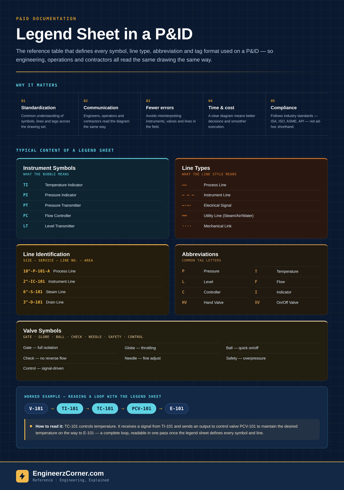

A P&ID is dense with circles, lines, and short strings of letters and numbers — and none of it is self-explanatory. A legend sheet is the reference table, usually the first sheet in a P&ID package, that defines every symbol, abbreviation, line type and tagging convention used across the rest of the drawing set. It's what turns a page of circles and dashes into something an engineer, an operator and a contractor can all interpret the exact same way.

A legend sheet is the key that unlocks a P&ID — instrument symbols, line types, tag format, abbreviations and valve symbols, all defined in one place.
What is a legend sheet?
A legend sheet is a reference table that defines all the symbols, abbreviations, line types and tagging conventions used in a P&ID. It ensures everyone interprets the drawing the same way, reducing confusion and errors on a document that will be read by process, mechanical, instrumentation and electrical engineers, plant operators, and construction or commissioning contractors — often years apart and without any of them talking to each other directly.
Every plant, EPC contractor and even individual project can draw its symbols slightly differently. A dashed line means "instrument signal" on one project and "existing line, not in this scope" on another. Without a legend sheet pinning down which convention applies to this drawing set, that ambiguity turns into a field question, a wrong valve pulled during a shutdown, or a P&ID markup that gets interpreted backwards.
Why it's important
| Reason | What it does |
|---|---|
| Standardization | Provides a common understanding of symbols, lines and tags across the whole drawing set. |
| Effective communication | Helps engineers, operators and contractors speak the same language when discussing the diagram. |
| Reduces errors | Avoids misinterpretation of instruments, valves and lines during design, operation or maintenance. |
| Saves time & cost | A clear diagram leads to better decisions and smoother execution, in the office and in the field. |
| Supports compliance | Follows industry standards (ISA, ISO, ASME, API, etc.) instead of ad-hoc, project-specific shorthand. |
Typical content of a legend sheet
Conventions vary by project, but most legend sheets define the same five categories.
1. Instrument symbols
| Symbol | Meaning |
|---|---|
| TI | Temperature Indicator |
| PI | Pressure Indicator |
| PT | Pressure Transmitter |
| FC | Flow Controller |
| LT | Level Transmitter |
| ⋈ | Control Valve |
2. Line types
| Line style | Meaning |
|---|---|
| ——— | Process Line |
| – – – | Instrument Line |
| –·–·– | Electrical Signal |
| ═══ | Utility Line (Steam / Air / Water) |
| ····· | Mechanical Link |
| – – – – | Drain / Vent Line |
3. Line identification
Line numbers on a P&ID usually follow a fixed format so anyone can decode a line's size, service and sequence without a separate lookup:
| Example tag | Decodes as |
|---|---|
| 10"-P-101-A | Process Line |
| 2"-IC-101 | Instrument Line |
| 6"-S-101 | Steam Line |
| 3"-D-101 | Drain Line |
4. Abbreviations
| Code | Meaning | Code | Meaning |
|---|---|---|---|
| P | Pressure | T | Temperature |
| L | Level | F | Flow |
| C | Controller | I | Indicator |
| T | Transmitter | V | Valve |
| HV | Hand Valve | XV | On/Off Valve |
5. Valve symbols
| Valve type | Typical use |
|---|---|
| Gate Valve | Full open/shut isolation, minimal flow restriction |
| Globe Valve | Throttling and flow regulation |
| Ball Valve | Quick quarter-turn on/off isolation |
| Check Valve | Prevents reverse flow |
| Needle Valve | Fine, precise flow adjustment |
| Safety Valve | Overpressure protection |
| Control Valve | Automatic, signal-driven flow modulation |
Worked example
Take a simple excerpt: a vessel V-101 feeds a control valve PCV-101 on its way to a downstream exchanger, E-101. A level or temperature transmitter TI-101 sits on the vessel, a temperature controller TC-101 sits above the control valve, and a pressure transmitter PT-101 sits downstream. None of that reads as more than shapes and letters without the legend sheet behind it.
| Symbol | Description | Example tag |
|---|---|---|
| TI | Temperature Indicator | TI-101 |
| TC | Temperature Controller | TC-101 |
| PT | Pressure Transmitter | PT-101 |
| ⋈ | Control Valve (Pneumatic) | PCV-101 |
Quick understanding
Every symbol, line and tag traces back to one defined convention. A drawing from three years ago reads the same way as one from last week.
Each reader fills in the gaps with their own assumptions — a fast path to a misread valve, a wrong isolation point, or a field query that stalls a shutdown.
Key takeaways
- ✓A legend sheet is the reference table that defines every symbol, line type, abbreviation and tag format used across a P&ID drawing set.
- ✓It standardizes how engineering, operations and contractors all interpret the same diagram, cutting down on misread instruments, valves and lines.
- ✓The five things it typically defines: instrument symbols, line types, line identification format, abbreviations, and valve symbols.
- ✓Line numbers usually follow a fixed Size – Service – Line No. – Sequence/Area format once the legend sheet has set the convention.
- ✓Always confirm symbol and line conventions against the project's own legend sheet — ISA/ISO/ASME/API are the common baseline, but every project can adapt them.